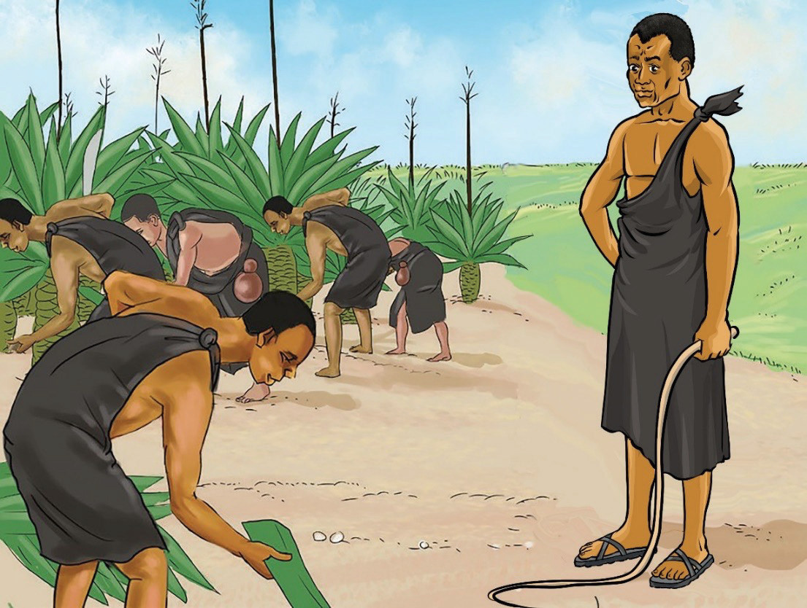

Kilimo
Wajerumani walianzisha shughuli za kilimo cha mazao ya biashara kama mkonge, mpira, kahawa na pamba. Mwaka 1902 wakoloni walijenga Kituo cha Utafiti wa Mazao Amani Usambara. Mwaka 1905 wakoloni walianzisha kilimo cha pamba Mwanza, Rufiji, Morogoro na Lindi. Baada ya Vita vya Maji Maji mwaka 1905-1907, wananchi waliruhusiwa kulima mazao ya biashara. Zao la mpira lililimwa Bagamoyo, zao la mkonge lililimwa Tanga, Morogoro, Kilosa, Lindi na Mikindani; na zao la kahawa lililimwa Kagera na Kilimanjaro. Kielelezo namba namba 4 kinaonesha mnyapara akisimamia vibarua wakifanya kazi katika shamba la mkonge.

Elimu
Serikali ya kikoloni ya Kijerumani ilidhamiria kukuza elimu ya kikoloni. Kwa mfano, Afrika Mashariki ya Wajerumani ililenga kuelimisha Waafrika wachache baada ya Vita vya Maji Maji ili wawasaidie katika shughuli zao za kiutawala.
Historia ya Tanzania na Maadili DRS V.indd 9
08/09/2025 10:32